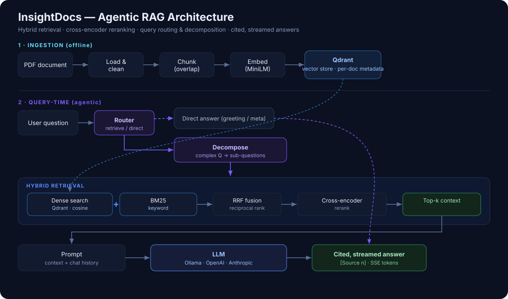

Agentic RAG · LLMs · Hybrid Retrieval · MLOps
InsightDocs: Production Agentic RAG
An end-to-end, deployed question-answering system over your documents — hybrid retrieval, cross-encoder reranking, query routing and decomposition, and a quantitative evaluation harness, all served behind a streaming API and chat UI.
Architecture

What makes it more than a demo
- Hybrid retrieval — dense vector search combined with BM25 keyword search, fused with Reciprocal Rank Fusion.
- Cross-encoder reranking — a supervised reranker reorders candidates for substantially higher precision than cosine similarity alone.
- Agentic layer — a router answers greetings and meta questions directly (no wasted retrieval); a decomposer splits complex questions into sub-questions, retrieves each, and merges the context.
- Evaluation harness — context precision/recall, MRR, faithfulness, and answer-F1 metrics with an A/B guide for the retrieval upgrades.
- Document management — stable document IDs with upsert-based updates (re-uploading a file updates it in place), plus list, delete, and reset.
- Provider-switchable LLM — one environment variable swaps between local Ollama and OpenAI/Anthropic.
- Streaming web UI — chat with token streaming and inline source citations.
Engineering
Built with a clean, modular architecture (ingestion, embeddings, retrieval, generation, agentic orchestration, and services), a branch-per-feature git workflow, unit tests for all pure logic, and GitHub Actions CI running the test suite on Python 3.10 and 3.11. Deployed with Docker Compose (Qdrant + API + optional Ollama) and a container healthcheck.
Tech stack
Python, FastAPI, Qdrant, Sentence-Transformers, BM25 (rank-bm25), cross-encoder rerankers, LangChain text splitters, PyMuPDF, Docker, GitHub Actions. LLM providers: Ollama, OpenAI, Anthropic.